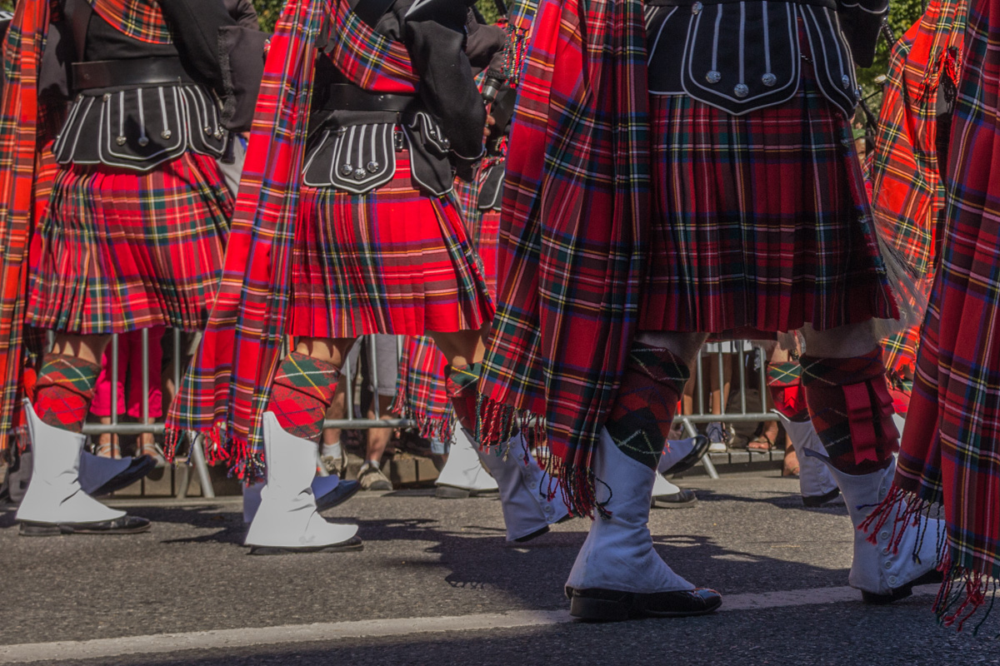
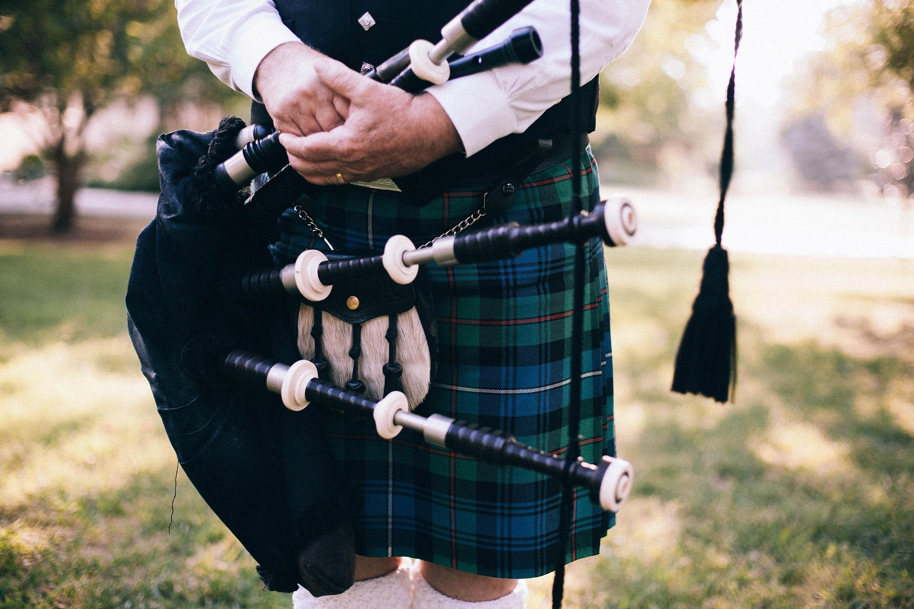
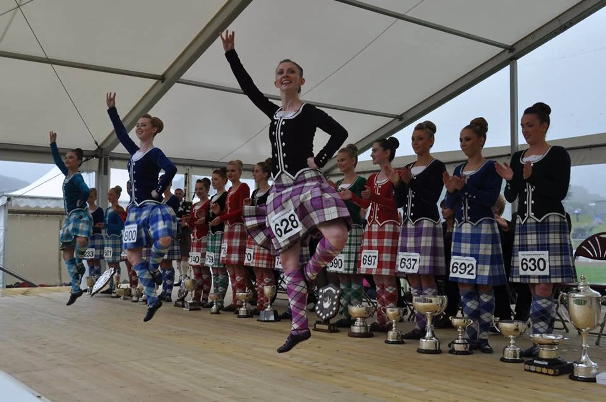
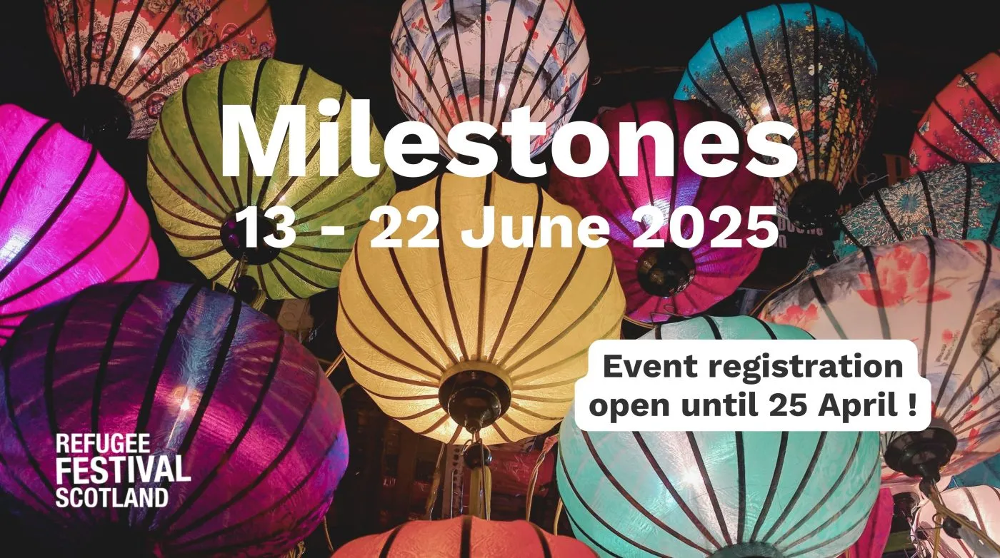

Terre de légendes et de paysages sauvages, l'Écosse possède une culture unique et vibrante, façonnée par des
siècles d'histoire,
de musique, de traditions et de fierté. Explorez un monde où les kilts dansent au son des cornemuses, où les
contes de fées se mêlent à la réalité,
et où l'hospitalité est une valeur sacrée.
Les Piliers de la Culture Écossaise
Le Kilt et les Tartans : Une Identité Tissée
Bien plus qu'un simple vêtement, le kilt est un symbole fort de l'identité écossaise, représentant la fierté
clanique et l'héritage familial.
Chaque tartan, avec ses motifs et couleurs spécifiques, est associé à un clan ou une région. Découvrez
l'histoire fascinante
derrière ces tissus emblématiques et apprenez à distinguer les différents tartans.

Tenue traditionnelle écossaise avec kilt et accessoires
Le son envoûtant de la cornemuse, ou "pìob mhòr" en gaélique, résonne dans les vallées et montagnes
écossaises
depuis des siècles.
Jadis un instrument de guerre, elle est aujourd'hui un symbole de célébration et de commémoration, jouée lors
des mariages, funérailles,
festivals et défilés. Laissez-vous emporter par sa mélodie puissante et émotive.

Un joueur de cornemuse traditionnelle écossaise
Musique et Danse : Une Expression de Joie et de Tradition
La musique traditionnelle écossaise, avec ses ballades mélancoliques, ses jigs entraînants et ses reels
rapides, est une source de fierté et de divertissement.
La danse, qu'il s'agisse des danses de groupe dynamiques des ceilidhs ou des mouvements gracieux des danses
des Highlands, est une façon festive
de célébrer la culture écossaise.

Danse traditionnelle des Highlands écossais
Écouter "Amazing Grace" à la cornemuseÉcouter "Scotland the Brave"
Bien que moins parlé aujourd'hui, le gaélique écossais est une langue celtique ancienne qui fait partie
intégrante du patrimoine culturel du pays.
Des efforts sont faits pour préserver et promouvoir son usage à travers l'éducation, les médias et les
événements culturels.
Découvrez la beauté et la richesse de cette langue unique.
Tout au long de l'année, l'Écosse s'anime de festivals et d'événements mettant en valeur sa culture et ses
traditions.
Des Highland Games, qui mettent à l'épreuve la force et l'adresse, aux festivals de musique celtique et aux
célébrations de la Burns Night,
il y a toujours une occasion de découvrir la joie de vivre écossaise.

Un festival traditionnel écossais avec musiciens et danseurs
L'Écosse est riche en mythes et légendes transmis de génération en génération. Des créatures mythiques comme
le
monstre du Loch Ness
aux récits de fées et de héros courageux, ces histoires captivantes font partie intégrante de l'imaginaire
écossais.
Laissez-vous envoûter par ces récits fascinants.
La culture écossaise est un mélange fascinant de traditions anciennes et d'influences modernes.
Nous vous invitons à explorer plus en profondeur cet héritage riche et à découvrir les nombreuses facettes de
l'âme écossaise.
Que votre voyage en Écosse soit réel ou virtuel, nous espérons que vous serez inspiré par sa beauté et son
unicité.